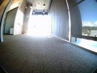
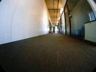
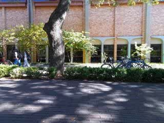

SR
↑ Higher is betterSuccess rate
Fraction of routes that reach the goal.
NeurIPS 2026 Oral
Language-Conditioned World Modeling
for Visual Navigation
LCVN studies action-sequence prediction from one initial egocentric image and a language instruction, without a goal image or intermediate environmental feedback. The proposed agents also imagine future observations.
Share of all trajectories · counts reported in the paper
Concise · Intricate · Landmark-based
Train and both validation splits are publicly available. The test split is held out.
Browse dataset files ↗Walk straight down the hallway, turn left at the corner, and stop near the end of the corridor.
Original annotation · validation seen · same indoor episode as below

Fraction of routes that reach the goal.
Error over the predicted action trajectory.
Error in relative motion along the route.
Structural fidelity to recorded observations.
Pixel reconstruction quality, measured in dB.
Learned perceptual distance to the recorded image.
Perceptual distance between predicted and recorded views.
Normalize motion and segment routes from five source datasets.
Human seed examples guide Qwen-3.5-9B using frames, a 2D path and metadata.
Human review checks route alignment and the three instruction styles.
Frames and maps support annotation; navigation inference receives only the initial image and instruction.
Appendix A · Figure A1 ↗Start with one image and a language instruction. Reveal the recorded future observations and position samples to explore a dataset trajectory.

Initial observationInitial observation os and language instruction I. The goal is specified through language.
An action sequence of planar displacements and yaw, ending with a null action. The proposed agents additionally predict future observations.
Learn to act inside an imagined world, or predict actions and observations with one shared model.
Learn a navigation policy through future states imagined by a world model.
Figure 2 · Original figure from the paper · Click to enlarge
LCVN-WM predicts future visual latents conditioned on actions and language. LCVN-AC learns a navigation policy inside the frozen world model, using expert-plan alignment and intrinsic rewards. At inference, the policy selects actions from imagined states and the instruction.
Read the full algorithm and pseudocode in the paper ↗Predict the next action and observation together in one shared sequence.
Figure 3 · Original figure from the paper · Click to enlarge
Actions, instructions and observations are tokenized into one shared sequence. Starting with the initial observation and instruction, LCVN-Uni predicts the next action and observation autoregressively, feeding predicted observations into subsequent steps until the null action.
Read the full algorithm and pseudocode in the paper ↗Qualitative comparisons of predicted observations on validation seen.
Five planning metrics alongside visual prediction quality. Compare models across seen, unseen and held-out environments.
Ranked per metric within this split; ties share a rank. — = not reported.
Planning follows the five metrics defined by WorldNav. Full-route fidelity and heading and turn fidelity are not reported in the paper. The challenge’s composite Score requires per-episode results and cannot be reconstructed from these aggregates.
Visual prediction uses ground-truth actions. Single-frame and eighth-step rollout scores are separate settings, reported for validation seen only. Navigation and imagination are separate evaluations; pairing them here does not imply a joint rollout measurement.
If you find this work helpful, we would appreciate a citation.
@inproceedings{dong2026language, title={Language-Conditioned World Modeling for Visual Navigation}, author={Dong, Yifei and Wu, Fengyi and Dai, Yilong and Kong, Lingdong and Chen, Guangyu and Sha, Yetong and Hu, Qiyu and Liu, Feng and Huang, Siyu and Dai, Qi and Cheng, Zhi-Qi}, booktitle={Advances in Neural Information Processing Systems}, year={2026}, url={https://arxiv.org/abs/2603.26741} }